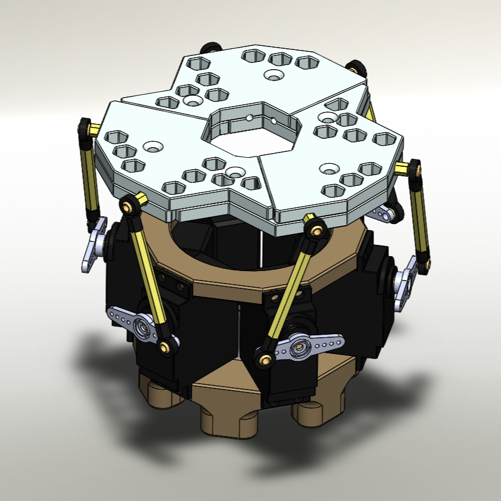
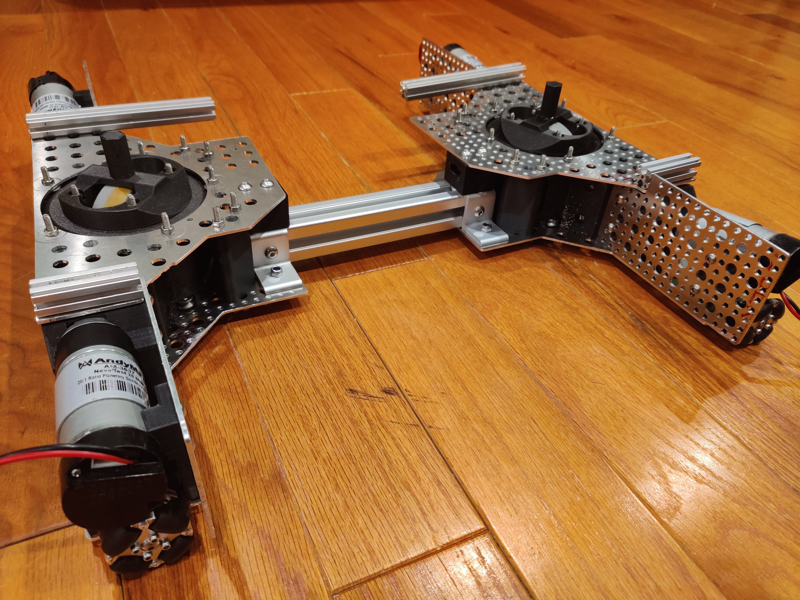

Terry Tao
As a current undergraduate student at the University of Michigan, I'm taking a computing-focused autonomy pathway and graduating in April 2025 with a B.S.E in Robotics Engineering. This is my portfolio website. You can find some cool projects I've worked on in the past.
My Projects
MRacing
I am the Autonomous System Director for the 23-24 design cycle for the Formula Student Racing team at the University of Michigan - Ann Arbor. It is my second year on the team, but a first for this autonomous subsystem at UofM. My role as driverless director is to oversee the design, manufacturing and integration of the autonomous steering, brakes and safety electronics, as well as develop our perception, mapping, and policy control software stack for this year's car.

One of the priorities of the autonomous system is a robust, vision + INS based mapping pipeline. I have created this ROS based mapping package that takes a camera stream, applies a custom YOLO traffic cone detection, filters the detections to track cones across frames, and integrates the perspective shifted detections into a global coordinate map for racing line optimization.
This project is still under development, and as such, cannot be fully showcased just yet. However, I am able to answer any questions about the system, and I'd be happy to tell you all about it in person.


- Python
- C++
- Torch
- Docker
- CAN
- OpenCV
- ROS
First Robotics
I designed and programmed this robot for the FIRST Tech Challenge 2021-2022 season. Our robot qualified for the Maryland Tech Invitational, which is a prestigious event that only accepts the top 40 teams internationally.
This is a video of the robot operating autonomously as it localizes and changes state in order to deposit cubes onto the platform as fast as possible.

Another mechanism on our robot is the 3 degrees of freedom tape measure turret, which is operated by a driver in order to place the plastic cup on top of the platform.

- Fusion 360
- Solidworks
- Java
Stewart Platform
This is a 6 degree of freedom parallel manipulator that I designed and programmed.
One application of this project could be a sailboat table or cooktop, so when the boat is under way, your food does not slide off. I used an IMU to dampen the acceleration in all 6 axes, demonstrated below:

- Solidworks
- C++
- Shop Skills
Custom 3D Printers
I designed a custom dual nozzle, water-cooled 3D printer so that I could print structural material alongside dissolvable supports, making complex geometries easier to print.

Here is my custom built open source small format printer (Voron-v0). The goal of this one was to print at higher temperatures, so a heated chamber was used to prevent warping.


- Fusion 360
- Solidworks
- Slicing Software
Loft
My apartment has very high ceilings, so I welded together a loft for my bed.

Assembly test at the shop, fully assembled in apartment:

After decoration:

- TIG Welding (GTAW)
Differential Swerve
In 2020, I developed a differential swerve drivetrain for FIRST Robotics, which used two motors per drive wheel to spin around both the z and x axes.
Because of the way the ring gears are designed, this swerve drive was capable of continuous rotation of the wheels to face any direction, which made positioning of this chassis faster than if mecanum wheels were used instead.
- Fusion 360
- Java
Thrust Vectoring
I developed a model rocket using a custom thrust vectoring module, which can be used to correct or control the trajectory during flight.

Parachute ejection mechanism testing:

Static fire test:

- Fusion 360
- C++
Skills
- Solidworks
- Fusion 360
- Inventor
- Onshape
- C++
- Java
- Python
- R
- MATLAB
- Git
- HTML
- Mathematica
- ROS
- OpenCV
- Pytorch
- Blender
- Simplify3D
- CLI
- CAN-HS
- CAN-FD
- I2C
- SPI
- UART
- Fiber Laser
- CO2 Laser
- Waterjet
- GTAW
- FDM Printing
- Wire Harnessing
- Chinese
Contact
- terrytao19@gmail.com
- 631-951-7354